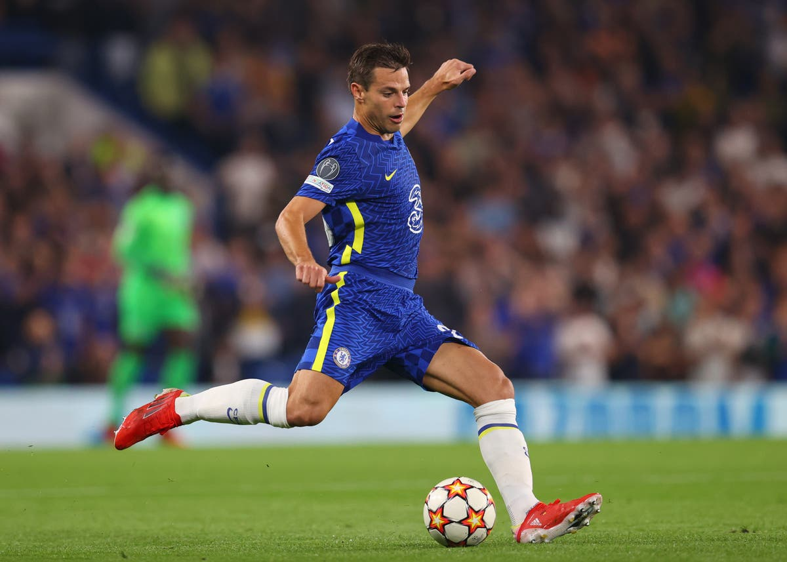

CESAR AZPILICUETA
CESAR AZPILICUETAเขาพิสูจน์ความสารพัดประโยชน์โดยสามารถโยกไปยืนเป็นแบ็คซ้าย รวมทั้งเล่นเป็นหนึ่งใน 3 เซ็นเตอร์ของทีม อัซปิลิเกวต้า ส่งท้ายฤดูกาลที่ 2 กับสโมสรด้วยตำแหน่งผู้เล่นยอดเยี่ยมแห่งปีจากการโหวตโดยเพื่อนนักเตะ เขาคว้าแชมป์พรีเมียร์ ลีกสมัยแรกของตัวเองได้ในปี 2015
ในปี 2109 อัซปิลิเกวต้า ถูกแต่งตั้งขึ้นทำหน้าที่กัปตันทีมของสโมสร หลังจากที่แกรี่ เคฮิลล์ย้ายออกไป โดยก่อนหน้านั้นเขาดำรงตำแหน่งรองกัปตันทีม และสวมปลอกแขนในแมตช์ที่พวกเราคว้าแชมป์ยูโรป้า ลีก
โธมัส ทูเคิ่ล นายใหญ่ชาวเยอรมันเข้ามารับงานเฮดโค้ชในเดือนมกราคม และเขาเลือกใช้ผู้เล่นที่มีประสบการณ์ขณะที่กำลังทำความรู้จักกับนักเตะ นั่นทำให้ อัซปิลิเกวต้า กลับมาเป็นตัวจริงอีกครั้ง ซึ่งเขาแสดงให้เห็นความสำคัญทั้งเกมรับและเกมรุกในระบบใหม่ 4-3-3 ยามที่เติมเกมขึ้นไปยิงประตูแรกในยุคของกุนซือคนใหม่ โดยซัดเบิกร่องช่วยพวกเราเอาชนะเบิร์นลี่ย์ 2-0 ในช่วงปลายเดือนมกราคม
ความสามารถในการเล่นทั้งตำแหน่งเซ็นเตอร์และวิงแบ็คของเขา กลายเป็นสิ่งล้ำค่าสำหรับ ทูเคิ่ล ที่จับ อัซปิลิเกวต้า, เจมส์ และ คัลลัม ฮัดสัน-โอดอย สลับหน้าที่กันขึ้นอยู่กับว่าเจอคู่แข่งทีมไหน และสถานการณ์ในแมตช์นั้นกำลังเป็นอย่างไร ไม่ว่าจะลงเล่นบทบาทใดก็ตาม กัปตันของเรา ได้กลายเป็นขาประจำให้กับ ทูเคิ่ล โดยพลาดลงสนามเพียง 3 นัดในทุกรายการ หลังการมาของกุนซือรายนี้
ระดับความฟิตด้านร่างกายสำหรับการลงเล่นอย่างสม่ำเสมอถือเป็นสิ่งสำคัญ จนมีคำกล่าวที่ว่านักเตะจะเริ่มเข้าสู่ช่วงขาลงเมื่อถึงวัย 30 ปี แต่สำหรับผลงานของ อัซปิลิเกวต้า ที่เขาได้แสดงออกมาในเกมสำคัญปลายซีซั่น 2020/21 เรียกได้ว่าน่าจะเป็นฟอร์มที่ดีที่สุดในสีเสื้อเชลซีเสียด้วยซ้ำ เขาสาธิตให้เห็นเป็นแบบอย่างในรอบรองชนะเลิศแชมเปี้ยนส์ ลีกที่พบกับเรอัล มาดริด และรอบชิงชนะเลิศที่เอาชนะแมนเชสเตอร์ ซิตี้ ซึ่งเป็นการเน้นย้ำให้เห็นว่า 'เดฟ' คือนักเตะที่โดดเด่นในแมตช์ใหญ่จริง ๆ
อัซปิลิเกวต้า กลับมามีชื่อให้สเปนอีกครั้งในทัวร์นาเม้นต์ยูโร 2020 ที่ถูกเลื่อนออกมา หลังจากการเริ่มต้นอันน่าผิดหวังที่เจอกับผลเสมอ 2 นัด แบ็คขวารายนี้ถูกส่งลงเล่นในนัดที่ 3 ของรอบแบ่งกลุ่ม และช่วยให้ "กระทิงดุ" ผ่านเข้าสู่รอบน็อคเอาต์ด้วยการถล่มสโลวะเกีย 5-0 เขารักษาตำแหน่งตัวจริงเอาไว้ได้ตลอดทั้งรายการ โดยสเปนผ่านไปถึงรอบรองชนะเลิศ ก่อนพ่ายแพ้ให้กับอิตาลีด้วยการดวลจุดโทษ 'เดฟ' ทำประตูแรกในนามทีมชาติช่วยให้สเปนขึ้นนำในเกมสุดมันที่คว้าชัยชนะช่วงต่อเวลาพิเศษ 5-3 เหนือโครเอเชียในรอบ 16 ทีมสุดท้าย
3 เดือนถัดมา เขาช่วยให้ "ลา โรฆา" ล้างแค้นอิตาลีด้วยชัยชนะในการแข่งขันยูฟ่า เนชั่นส์ ลีก รอบรองชนะเลิศ แต่ไม่สามารถพาทีมรอดพ้นจากการปราชัยต่อฝรั่งเศส 2-1 ในรอบชิงชนะเลิศ
SOCIAL MEDIA
 |
|